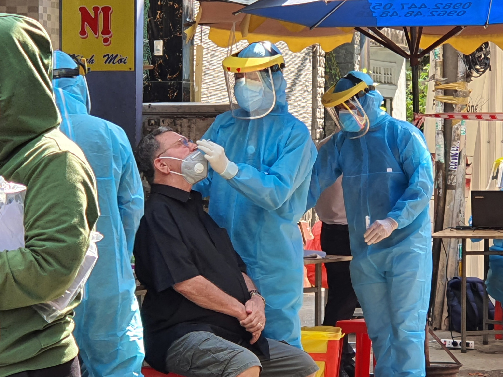
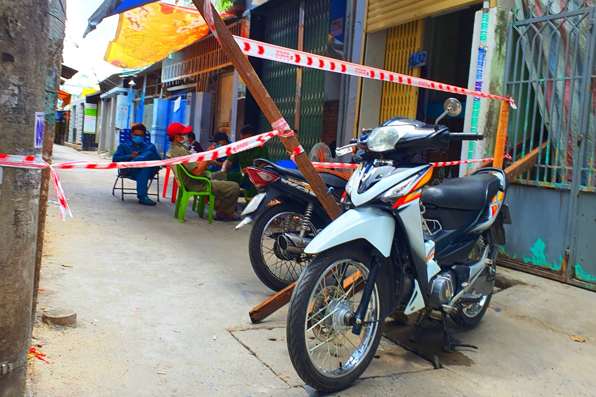
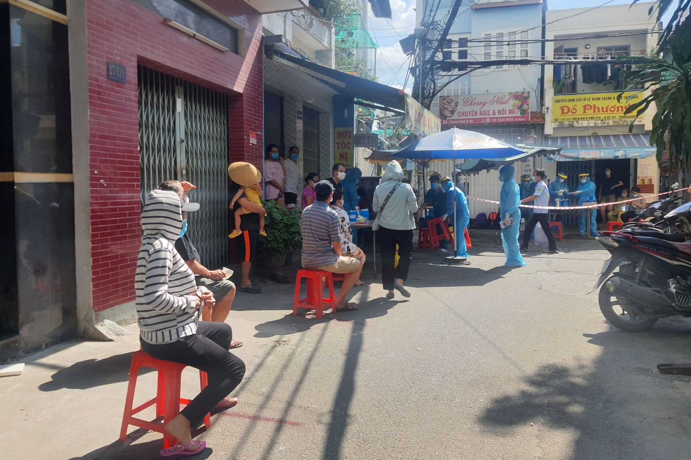

Lực lượng chức năng đang phong tỏa, lấy mẫu xét nghiệm người dân khu vực số 57/55 Điện Biên Phủ, P.15, Q.Bình Thạnh (TP.HCM) vì có 3 ca nghi nhiễm Covid-19, liên quan Hội thánh truyền giáo Phục Hưng.
Thực hiện lấy mẫu người dân trong khu vực số 27/55 (hẻm thông với khu vực 57/55) Điện Biên Phủ, P.15, Q.Bình Thạnh - ẢNH: BÍCH NGÂN
Trao đổi với PV Thanh Niên chiều 31.5, một lãnh đạo Trung tâm y tế Q.Bình Thạnh cho biết, lực lượng chức năng đang chốt chặn phong tỏa tại khu vực số 57/55 Điện Biên Phủ, P.15, Q.Bình Thạnh, do có 3 ca nghi nhiễm Covid-19, truy vết dịch tễ có liên quan Hội thánh truyền giáo Phục Hưng.
Phong tỏa tại khu vực 57/55 Điện Biên Phủ. P.15, Q.Bình Thạnh - ẢNH: BÍCH NGÂN
Trước đó, Trạm y tế P.15, Q.Bình Thạnh nhận được thông báo của 1 cư dân trong khu vực trên về trình trạng sức khỏe có dấu hiệu ho, sốt, sổ mũi của bản thân. Ngay lập tức, Trạm y tế P.15 đã lập phiếu theo dõi người tiếp xúc bệnh nhân.
Qua truy vết khai báo dịch tễ, cơ quan y tế xác định cư dân này là trường hợp F1 của bệnh nhân 6288 (bệnh nhân 6288 đã xác định mắc Covid-19 được Bộ Y tế công bố ngày 27.5, liên quan đến Hội thánh truyền giáo Phục Hưng). Có 2 người tiếp xúc gần với cư dân trên và đều có triệu chứng. Gò Vấp “xả chốt” phong tỏa Covid-19, người dân bối rối không biết nên đi hay về
Người dân đợi lấy mẫu xét nghiệm Covid-19 tầm soát tại hẻm 27 Điện Biên Phủ, P.15, Q.Bình Thạnh (hẻm thông với khu vực 57/55) - ẢNH: SONG MAI
Ngay lập tức, địa phương đã áp dụng biện pháp cách ly y tế khu dân cư; tổ chức khoanh vùng, cách ly, xử lý ngăn ngừa, lấy mẫu phòng, chống Covid-19 tại cộng đồng…
Hiện các lực lượng chức năng triển khai chốt chặn phong toả 4 chốt xung quanh khu vực trên, trong đó có khu vực hẻm 27 Điện Biên Phủ.
Đến chiều 31.5, lực lượng y tế vẫn đang lấy mẫu xét nghiệm tầm soát người dân khu vực này.
Tin liên quan